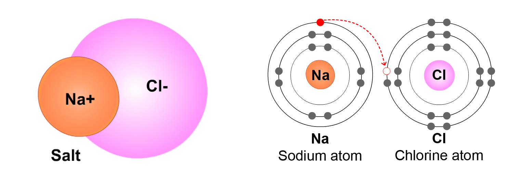
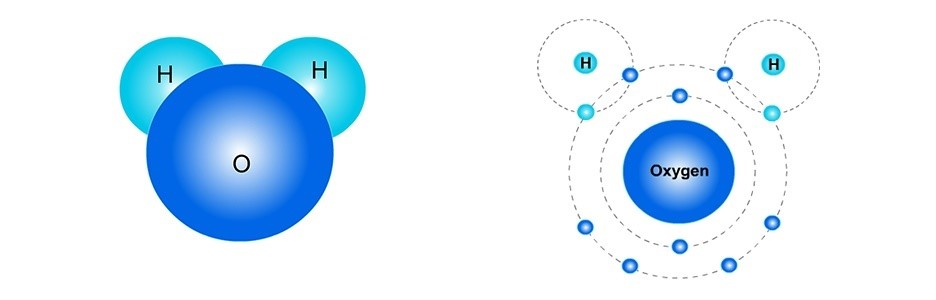
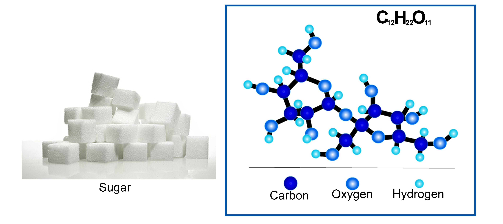
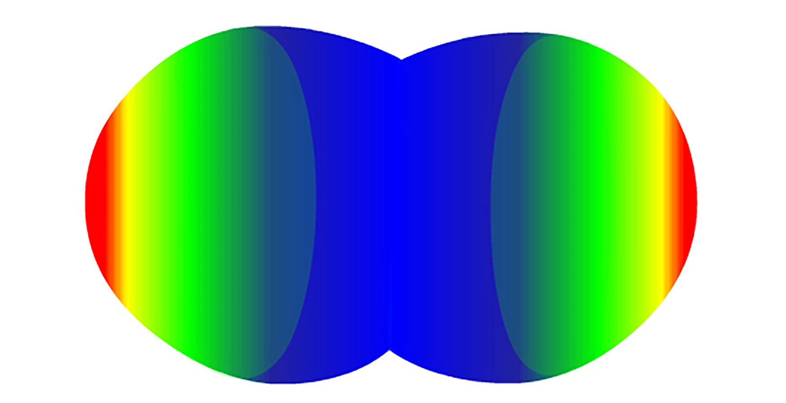
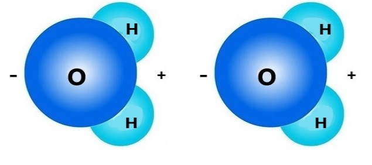
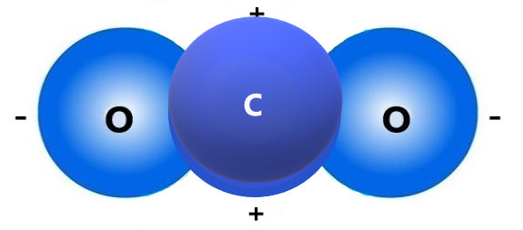

Molecules
What are Molecules? Atoms can be attracted to other atoms. When this happens, they form groups of atoms called molecules. Molecules are two or more atoms that are bonded together through some attractive force (often, the electric force).
Molecules can be made of atoms of the same type. For example, an oxygen molecule, O2, is made of 2 oxygen atoms.
Or, molecules can be made of atoms of different types (or different elements). For example, a water molecule, H2O, is made of two different elements: hydrogen (H) and oxygen (O).
- We call molecules that are made of different elements "compounds." H2O and NaCl are both compounds. O2 is not a compound, since it's only made of two oxygen atoms.
The number after each element shows the number of atoms of that element in the molecule. If there is no number after the element, that means there is just one atom of that element. For example, in H2O, the "2" after H means that there are 2 hydrogen atoms in a molecule of H2O. There are no numbers after "O," which means there is just one oxygen atom.
Let's look at some different molecules now...
Example 1: O2. Two oxygen atoms may bond together to form an O2 molecule (the "2" after the "O" means that there are two Oxygen atoms in this molecule). Below are two different ways of representing bonded Oxygen atoms that form the molecule O2. The picture on the left shows a very simple "ball" model of an oxygen molecule:

The picture above on the right shows a more detailed model. Here, the "O"s (for "Oxygen") are shown in place of the nucleus. This is just a simpler way to represent the nucleus of an oxygen atom. The electrons (e-) from the oxygen atom on the left are shown as Xs and the electrons from the oxygen atom on the right are shown as dots.
The electrons are shown along circles. You may have noticed that there are 4 electrons that are between the oxygen atoms (on the outside circles). The oxygen atoms "share" these 4 electrons.
(Note: The circle that each electron is associated with is not a physical "thing", but represents the amount of energy the electrons on that Energy circle have.)
Example 2: NaCl. An atom of sodium (Na) and an atom of chlorine (Cl), bond to make a molecule of NaCl (sodium chloride, or common table salt). Because NaCl molecules are made of two different elements (Na and Cl), NaCl is a compound.
Below are two ways to represent an NaCl molecule.
In the picture above on the right, the electrons are shown this time as dots on the Energy circles. This picture shows how an electron (e-) from Na moves to the Cl atom. Because there is an extra electron (e-) on the Cl side of the NaCl molecule, the Cl side is negatively charged. Because the Na atom has lost an electron, it becomes .
(Note: Each Energy circle represents a different amount of energy that all electrons on that circle have. The Energy circles do not show how the electrons move or orbit the nucleus.)
Example 3: H2O. A water molecule (H2O) has two hydrogen (H) atoms (the "2" after the "H" means there are two hydrogen atoms) and one oxygen (O) atom. Some people think a water molecule looks like Mickey Mouse, where its "ears" are the H atoms. Maybe that can help you remember its shape?
In the picture on the right, there are four electrons (e-) that are shared by the oxygen and two hydrogen atoms. These 4 shared electrons are the two lighter blue electrons (the hydrogen's) and darker blue electrons (the oxygen's) that are in the Energy circle of each H atom. These four electrons are also in the oxygen atom's outer Energy circle. This means that sometimes these electrons "belong" to the hydrogen atoms and sometimes "belong" to the oxygen atom.
Fill-in-the-blank: H2O molecules have .
Example 4: CO2. A carbon dioxide molecule (CO2) has three atoms: one carbon (C) atom and two oxygen (O) atoms. Do you see how there are 8 electrons that are between the carbon and each oxygen atom (there are 4 on each side of the carbon's nucleus)? These electrons are shared by the carbon and oxygen atoms.

Example 5: C12H22O11 (sucrose, or common table sugar). A sugar molecule is much more complex! Sucrose, or common table sugar, has 12 carbon atoms, 22 hydrogen atoms, and 11 oxygen atoms.
The picture above to the right represents a molecule of sucrose (C12H22O11) or "sugar". This way of representing a molecule is called a "ball and stick" model, where the balls represent the atoms, and the black "sticks" represent bonds between particular atoms.
It is important to understand that bonds between atoms—represented as "sticks" in this picture—are not material or physical objects or things with mass. Bonds are just attractive forces between two atoms (which do have mass), resulting from electric forces between charged particles (electrons and protons).
(A common misconception people have is that "energy" is "contained" or "stored" within bonds. This is false. Energy is an abstract measurement of the motion of objects or radiation.)
Why do atoms bond to form molecules?
It may seem a bit strange, but atoms bond with each other because they "like" it when their outer Energy circle is full. (This is discussed more in the unit Atoms: Electron Organization.) Energy circles are full when no more electrons can be in that Energy circle. Atoms are more stable when their outer Energy circle is full.
- The first Energy circle (E1) is full when there are 2 electrons.
- The second Energy circle (E2) is full when there are 8 electrons.
- The third Energy circle (E3) is full when there are 18 electrons.
Some bonding between atoms results from atoms having only one electron in the outer-most Energy circle. To minimize (potential) energy, the electron may move from an Energy circle (or energy level) in one atom to another. Atoms may also share electrons with each other in order to fill up the outer Energy circles.
- Bonding Example 1: NaCl. An atom of Na (sodium) has only one electron in its 3rd Energy circle. So, the electron moves from the Na (sodium) atom to the Cl (chlorine) atom. This is shown in the figure below (left). This electron now orbits around the Cl atom (shown below, right). As a result of losing an electron, the Na atom becomes positively charged. And, as a result of gaining an electron (which has a negative charge), the Cl atom becomes negatively charged.
- The electric force between the positively charged Na atom (Na+) and the negatively charged Cl atom (Cl-) pulls them together. Because of this, the Na and Cl atoms are attracted to each other. We say that they are "bonded". But this just means that the atoms are attracted to each other. The result of this bonding between atoms is the NaCl (or salt) molecule.

Bonding Example 2: H2O (water).
Reminder: Atoms "like" having a "full" outer Energy circle.
- The first Energy circle (E1) in an atom is full when there are 2 electrons.
- The second Energy circle (E2) in an atom is full when there are 8 electrons.
- The third Energy circle (E3) in an atom is full when there are 18 electrons.
-
In an H2O molecule, Oxygen atoms have 6 electrons in their second (and outer) Energy circle.
Oxygen "wants" 2 more electrons to complete that Energy circle. Each Hydrogen atom only has one electron,
which is in the first Energy circle. So, the electron from each hydrogen atom is pulled into the outer
Energy circle of the Oxygen atom to complete that Energy circle.
The oxygen atom has eight protons and each hydrogen atom only has one proton. So, the oxygen nucleus pulls on the electrons more strongly than each hydrogen nucleus. As a result, the electrons are more often on the oxygen side of the molecule. The additional electrons cause the Oxygen to become more negatively charged and the Hydrogen atoms to become more positively charged. Due to electric forces, the (more positively charged) hydrogen atoms and the (more negatively charged) oxygen atom are attracted to each other. As a result, the three atoms are held together, forming a water molecule.

- Electrons may move from one atom to another atom in molecules. This results in molecules — including salt molecules, sugar molecules, and water molecules — having areas that are more positively charged and areas that are more negatively charged. This property of molecules, called polarity, helps other molecules with charged areas, like salt and sugar, dissolve in water.
Bonding Example 3: CO2. In CO2, different atoms "share" electrons. Two of each of the oxygen's electrons (represented as dots below) orbit both the oxygen atom and the carbon atom. Also, four of the carbon atom's electrons (represented as "X"s below) orbit both the oxygen and carbon atoms. So, there is a lot of sharing of electrons in a CO2 molecule! Now, all three atoms have two electrons in the closest Energy circle, and also share 8 electrons in the second Energy circle.

The oxygen atoms only need two more electrons to complete their outer Energy circle. But the carbon atom needs four more electrons to do that. So, the oxygen atoms are closer to having their second Energy circles completed.
Also, oxygen atoms have 8 protons (each with a positive charge). Carbon atoms have 6 protons. So, electrons (which are negatively charged and attracted to positively charged protons) tend to be pulled to of the CO2molecules.
Because the oxygen atoms have more protons and pull harder on the electrons, the shared electrons spend more of their time in the oxygen atoms' Energy circles. As a result, the oxygen ends of the CO2 molecules tend to be more negatively charged (represented as red in Figure 1 below). The carbon in the middle tends to be more positively charged (represented as blue in Figure 1 below).
Figure 1. Charge distribution of Carbon dioxide molecule (red: negative charge; blue: positive charge)
For more information about why atoms "take" or "share" electrons from/with other atoms, please see the unit: How Electrons are organized.
(Slightly Advanced concept: Polarity)
Polarity. When one side of a molecule has a positive charge and the opposite side has a negative charge, the molecule is considered to be "polar." Polar molecules attract the oppositely-charged parts of other polar molecules. Water molecules are polar molecules: the hydrogen sides are positively charged and the opposite (oxygen) sides are negatively charged. This is why they "stick" to other water molecules. (This is also why your hairs stick to each other when they are wet but not dry!)
Below are two water molecules. The positively charged side of the first molecule and the negative side of the second molecule attract each other. These attractions allow water molecules to form droplets.
A carbon dioxide (CO2) molecule is represented below.
You've reached the end of this unit. You can click on the Chemical & Physical Reactions button above for more units related to your research question.